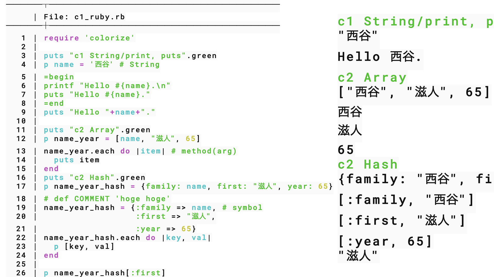
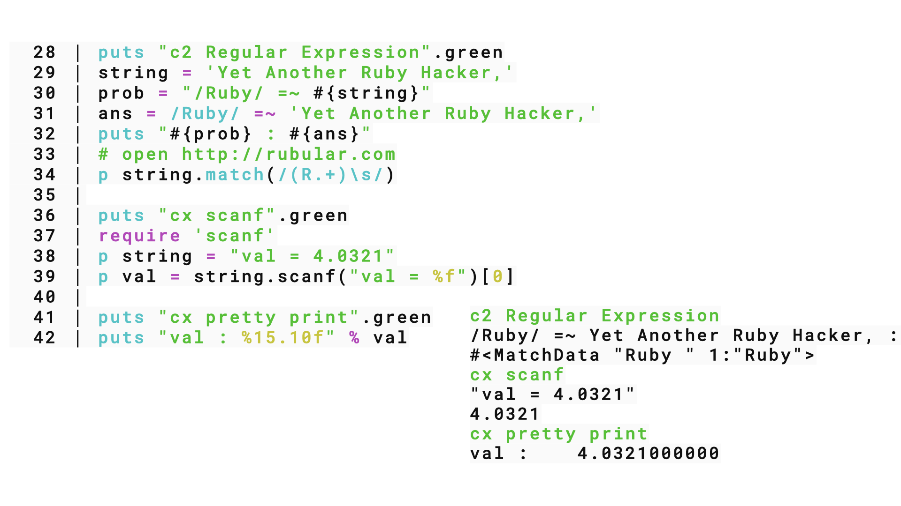

Ruby basics
Table of Contents
prev_button up_button next_button
 |
1. hoge
- **reduction：集約，または集約演算**
複数の値を和・最大値・平均などの少数の値へまとめる操作です．
- **broadcasting：ブロードキャスト**
日本語へ無理に訳さず，カタカナ表記が一般的です．形の異なる配列を，自動的に形を合わせて演算する仕組みです．
- **vectorization：ベクトル化**
要素ごとの処理を明示的な`for`文で書かず，配列全体への演算として記述することです．
2. d5 command and direnv
2.1. command line application
- TDD == 現場合わせ => 一般化，切り分け
- 現場合わせ
- KentBeck Test Driven Development
- object思考開発に設計はいらんという教え
- 実行コードの置き場(切り分け)
path, '.', '~/bin', echo $PATH |
for user whole |
direnv |
for object directory |
Rakefile(next week?) |
for dirs |
'.' |
for current dir |
- memoの置き場
- c1_ruby.rb => keynote => my_help
2.2. misc cla on wsl
2.2.1. copy-as-org on fish on wsl
はい．Windows上のCodexアプリと，WSL内のFishを組み合わせても作れます．WindowsのクリップボードをWSLから読み取り，PandocでOrgへ変換し，再びWindowsのクリップボードへ戻します．
WSLへPandocをインストール
WSLのFishで実行します．
sudo apt update
sudo apt install -y pandoc
確認します．
pandoc --version
Fish関数を作成
WSLのFishで次を実行します．
function copy-as-org
powershell.exe -NoProfile -Command 'Get-Clipboard -Raw' |
pandoc -f gfm -t org |
clip.exe
end
続けて保存します．
funcsave copy-as-org
保存先はWSL内の次の場所です．
~/.config/fish/functions/copy-as-org.fish
一般的には次のようなパスになります．
/home/ユーザー名/.config/fish/functions/copy-as-org.fish
登録確認
type copy-as-org
functions --details copy-as-org
関数ファイルも確認できます．
cat ~/.config/fish/functions/copy-as-org.fish
使用方法
- Windows版Codexで返信のコピーアイコンを押す．
- Windows TerminalのWSL／Fishへ切り替える．
- 次を実行する．
copy-as-org
- WindowsまたはWSL上のEmacsへ貼り付ける．
WindowsのクリップボードがOrg形式へ置き換わっているため，Windows側のアプリにも貼り付けられます．
Microsoft公式ドキュメントでも，WSLから powershell.exe
を実行でき，Linux側の出力を clip.exe
へ渡せることが説明されています．WSL相互運用．また，=Get-Clipboard -Raw=
は複数行のクリップボード内容を一つの文字列として取得します．Get-Clipboard．
日本語が文字化けする場合
環境によってWindows
PowerShellの文字コードに差が出る可能性があります．その場合，PowerShell
7が入っていれば powershell.exe を pwsh.exe に変更します．
function copy-as-org
pwsh.exe -NoProfile -Command 'Get-Clipboard -Raw' |
pandoc -f gfm -t org |
clip.exe
end
funcsave copy-as-org
まずは powershell.exe 版を試し，日本語が崩れる場合だけ pwsh.exe
版へ切り替えるのがよいです．
2.2.2. direnv install
Fishなら，WSL内で次のように設定します．
sudo apt update
sudo apt install -y direnv
mkdir -p ~/.config/fish
echo 'direnv hook fish | source' >> ~/.config/fish/config.fish
exec fish
確認します．
direnv version
mkdir -p ~/direnv-test
cd ~/direnv-test
echo 'set -gx DIRENV_TEST ok' > .envrc
direnv allow
echo $DIRENV_TEST
ok と表示されれば成功です．
Fish用のフックは，direnv公式設定手順でも
direnv hook fish | source と指定されています．
3. d6 Rakefile
- rake
- gems
4. d4 Array Hash
4.1. path
> echo $PATH
> mkdir ~/bin
> cp multi_scale_public/bin/* ~/bin
> code ~/.config/fish/config.fish
> set PATH . ~/bin $PATH
4.2. Ruby code
 |
 |